Reflection of Module Experience
In this section, I discuss my experience of learning web development during this module. Throughout the term, I learned the basics of HTML and CSS and used them to design and build my own portfolio website. This experience helped me understand how websites are structured, styled, and made more user friendly.
How I Found the Module
I found this module both interesting and challenging. At the beginning, HTML seemed difficult because there were many tags and I was not familiar with how they worked together. However, after practising in weekly exercises and using the tags in my own pages, I became much more confident. I learned how to structure content properly using semantic elements such as navigation, header, section, and footer.
CSS was also an important part of my learning. It allowed me to change the appearance of my website and make it more attractive. At first, styling was confusing because there were many properties to remember, but over time I learned how to control colours, spacing, alignment, buttons, forms, and page layout. I also understood how consistency in design improves the overall user experience.
Overall, this module has been a positive learning experience with both ups and downs. It has improved my confidence in front-end web development and given me a strong foundation that I can continue to build on in future modules.
Design Decisions
While creating this portfolio, I wanted the website to look clean, simple, and professional. I used a dark navigation bar at the top of every page so the user can easily move between the different sections of the site. I kept the layout consistent across the Home, Projects, Contact, Demo, and Report pages because the assignment instructions required a consistent design throughout the whole website.
I used the Roboto font from Google Fonts because it looks modern and is easy to read. I also used a light background colour with dark text to keep the content clear and accessible. Green was used for buttons and hover effects because it provides a strong contrast and helps important interactive elements stand out.
I also used Font Awesome icons on the home and contact pages. These icons improve the visual appearance of the website and make it easier for users to identify social links quickly. Another design choice was keeping the homepage minimal, with a short introduction, action buttons, and social icons. This makes the page look professional and avoids unnecessary clutter.
For inspiration, I looked at portfolio website examples and used them to guide my layout ideas. However, I kept my own content, colours, and structure simple so that the site remained suitable for the assignment requirements and easy to navigate.
My Homepage Screenshot
The image below shows the homepage that I created for this portfolio website. The page includes my name, course title, a short personal introduction, links to contact and resume areas, and social media icons.
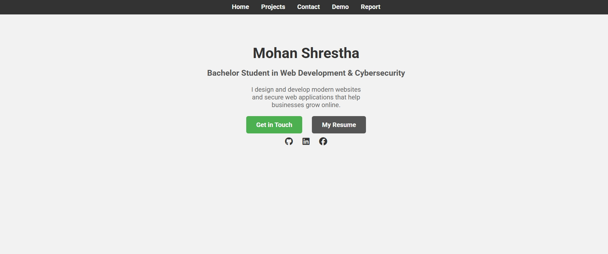
Development of the Website
The website was developed over time by building each page separately and then linking them together through the navigation menu. I first created the home page, then added the projects page, contact page, video demonstration page, and finally this report page. During development, I made changes to spacing, colours, alignment, and sizing in order to improve the overall look of the website.
One challenge I faced was making sure that the layout remained clean and consistent across multiple pages. For example, I had to correct issues where the navigation bar and contact form were not positioned properly. By testing the code and adjusting the CSS, I was able to solve those issues and improve the page structure.
I also learned the importance of testing and validation. Checking the HTML and CSS allowed me to identify errors and correct them so the website followed proper standards. This helped me understand how small mistakes in code can affect layout and functionality.
Validation Screenshots
Below are the validation screenshots for each HTML and CSS file used in this website. Each image is clickable, so it can be opened and viewed more clearly.
Index.html
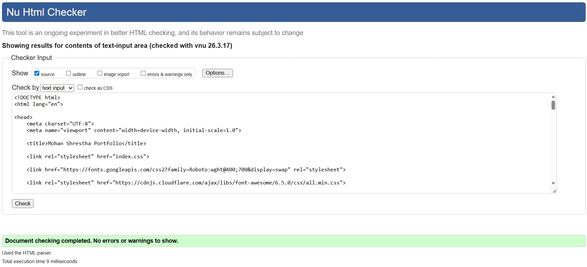
Project.html
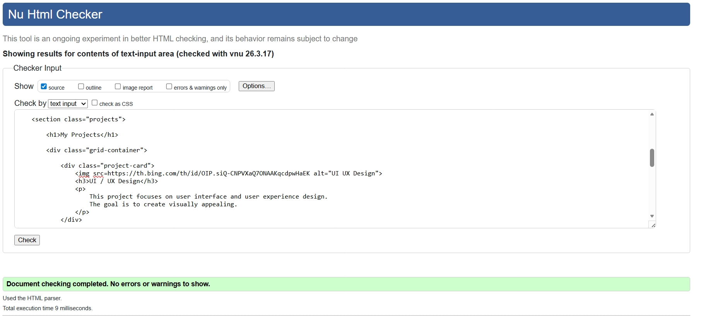
Contact.html
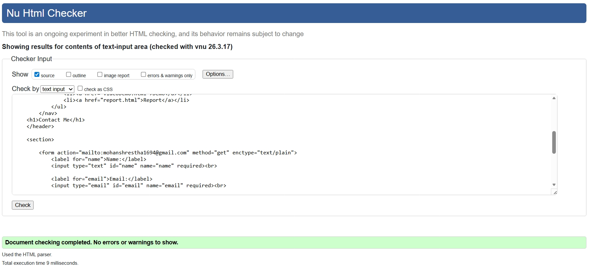
Report.html
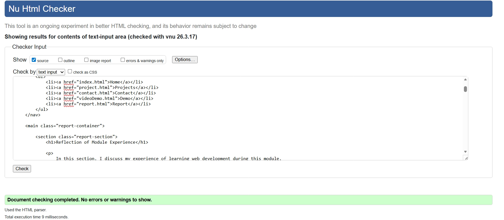
VideoDemo.html
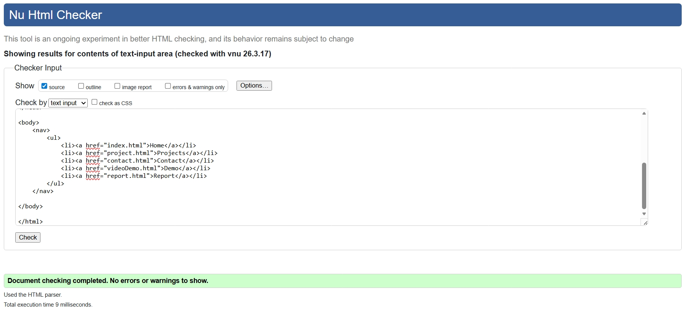
Index.css
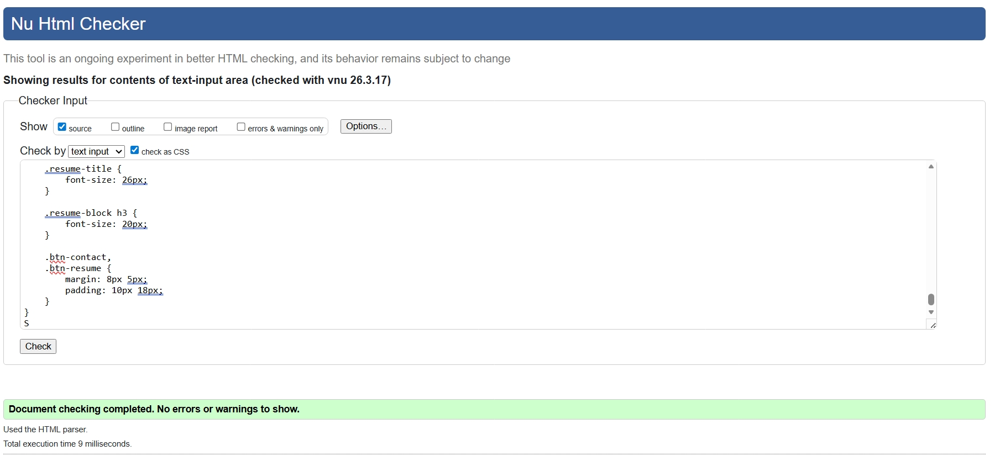
Project.css
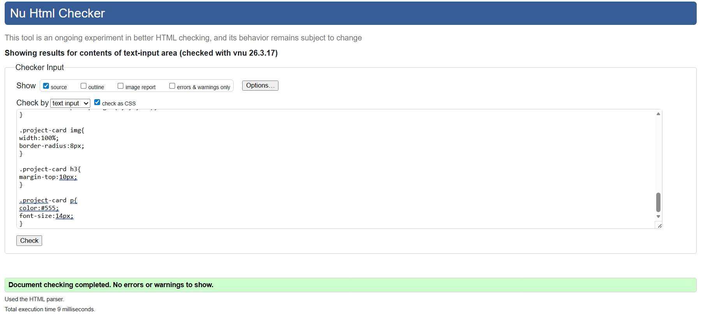
Contact.css
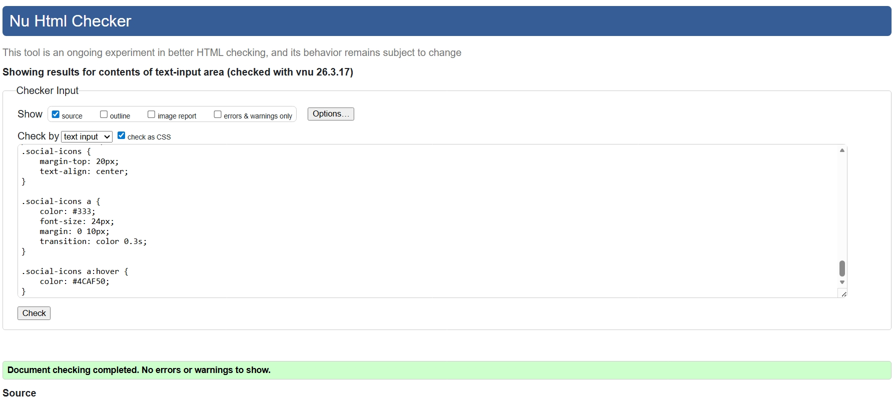
videoDemo.css
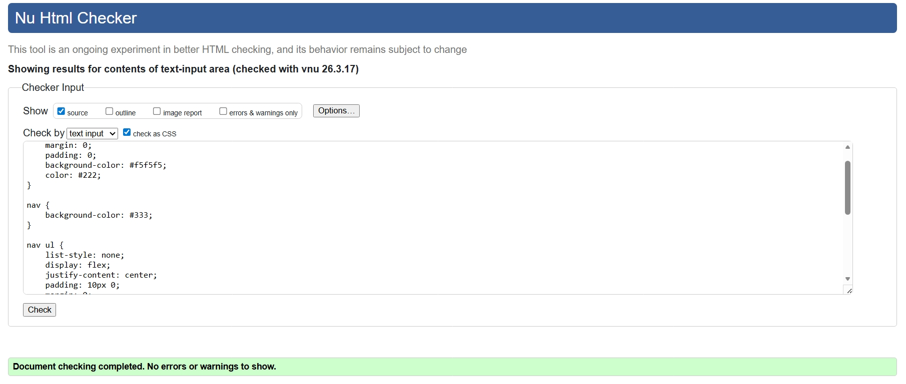
report.css
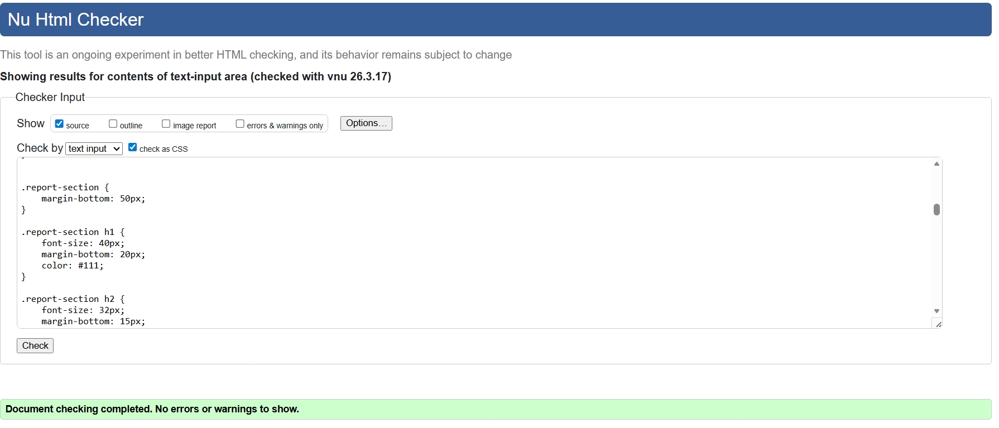
mobileview.css
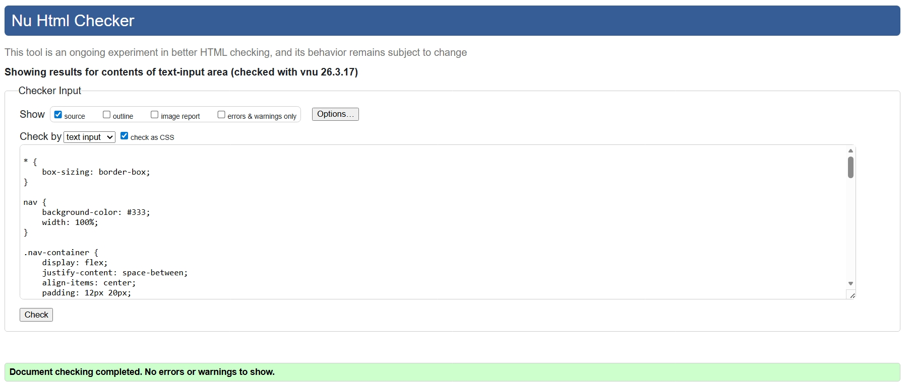
Video Demonstration
Below is the link to my video demonstration for this assignment. The same link can also be accessed from the Demo page of the portfolio website.